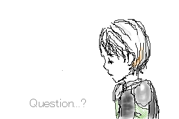

August.2002
「うつむきローちゃん」命名 By あんずさん
ローちゃんに初めて挑戦！大好きなローちゃんだけに難しかったです。
時たま見せる、こんな表情のローちゃんが私は一番好きだったりします。
スペースを作っちゃったので、何となく「クエスチョン」の文字を入れちゃいました。
今となってはもっと文字を考えた方が良かったのかも、とも思います。まぁいっか。
ローちゃんだけはもっといじけて、わがままでいて欲しいなぁ〜(笑)。